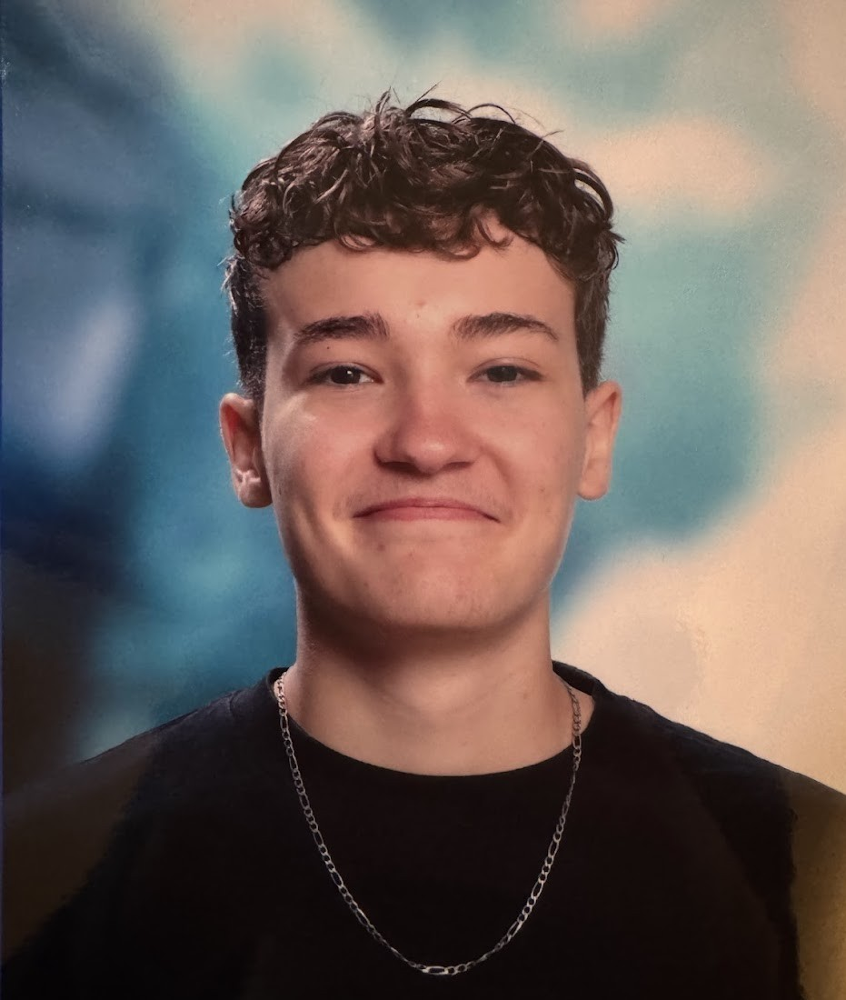

FBÉtudiant BUT Science des Données — 1ère année
Étudiant en BUT Science des Données, je développe mes compétences en analyse, statistiques et visualisation à travers différents projets académiques. Rigoureux et curieux, je m'intéresse à la manière dont les données peuvent être exploitées pour aider à la prise de décision.
La data est au cœur de ma curiosité : j'aime comprendre comment des chiffres bruts peuvent raconter une histoire, révéler une tendance ou orienter une décision. Au-delà des études, je m'intéresse à la stratégie de course automobile — un domaine où l'analyse en temps réel peut faire la différence entre une victoire et un abandon.
Je suis également attentif à l'actualité technologique, particulièrement aux avancées en intelligence artificielle et en traitement de la donnée.
J'ai pratiqué le judo et le rugby pendant plusieurs années — deux sports qui m'ont beaucoup apporté. Le judo m'a forgé sur la rigueur, la technique et la gestion de l'effort. Le rugby m'a appris l'esprit collectif, la communication et la résilience face à l'adversité.
Ces valeurs — discipline, travail d'équipe, dépassement de soi — je les retrouve naturellement dans ma façon d'aborder les projets académiques et professionnels.
Mon ambition est de travailler dans le sport automobile, et plus particulièrement dans l'endurance — WEC, IMSA ou tout autre championnat GT et prototype. La LMP2 sur ce portfolio n'est pas un hasard.
Je vois dans la donnée un rôle central dans ce milieu : stratégie de course, télémétrie, performance des pilotes, optimisation des arrêts. C'est à cette intersection entre la passion et les compétences que je veux construire mon avenir professionnel.